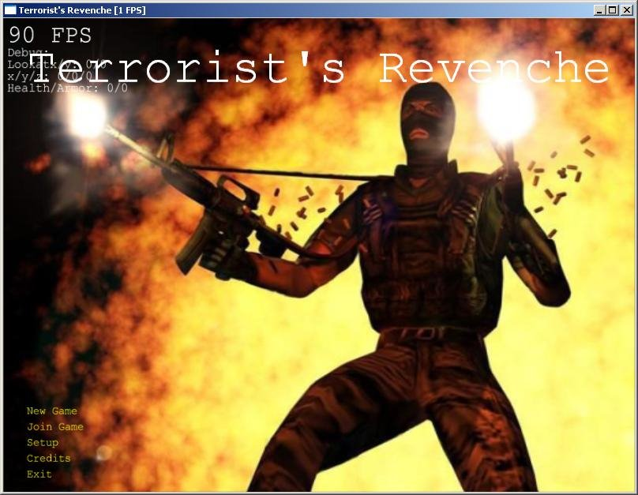
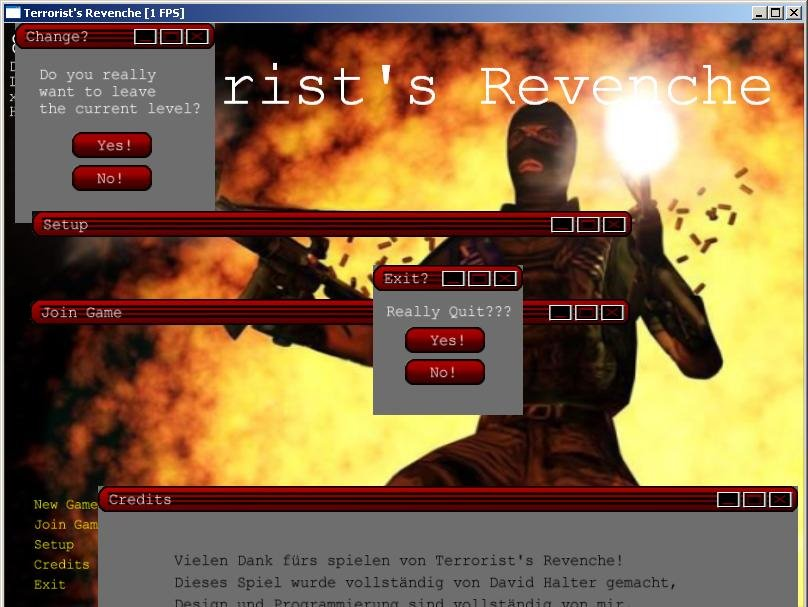
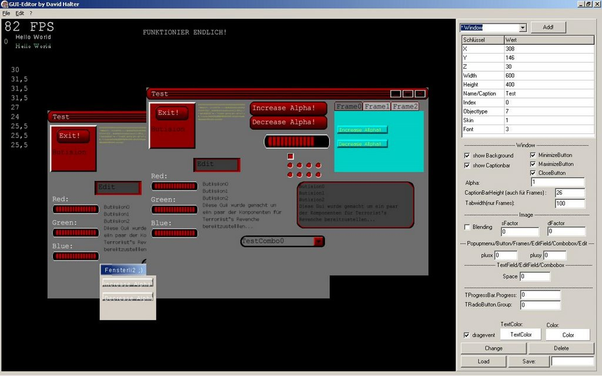

Gui goes final
written on Saturday, March 3, 2007
Note
This is about a game I once wrote, which was part of my high school thesis. Unfortunately, it's written in German.
Ich habe jetzt meine GUI soweit beendet, mittlerweile habe ich noch sehr viele Bugs gefixt. Ausserdem sind nun die Fenster immer schön geordnet im Vorder- bzw. Hintergrund.
Ich habe auch einen neuen Skin entworfen, was mich ziemlich viel Zeit kostete, jedoch bin ich gut zufrieden damit, da er wirklich viel besser aussieht, wie der Standart-Windows Skin.
Nun habe ich die GUI auch ins Game eingebaut, die Fenster sind zwar vielfach noch nicht wirklich mit allen Optionen ausgestattet, jedoch reicht mir das ganze so wie es jetzt ist, für den Moment. Das ganze werde ich sicher noch verbessern, bzw. verschönern.
Hier noch die Screenshots, die sagen wohl am meisten aus:
  PS: Im übrigen ist zu sagen, dass ich natürlich nicht nur an der GUI drangesessen bin, während der langen Zeit zwischen den Posts. Ich kann jetzt schon Levels laden und das ganze sieht auch noch ziemlich gut aus, dazu jedoch nächste Woche.
Thank you for reading! You can follow me on github or twitter. If you like my OS projects, you could consider a donation on gittip.
blog comments powered by Disqus